MICES 2017
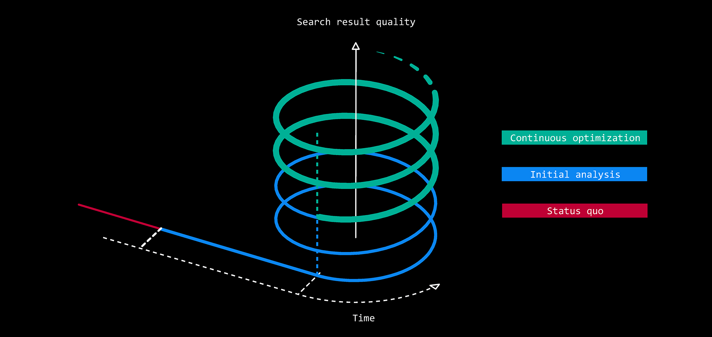
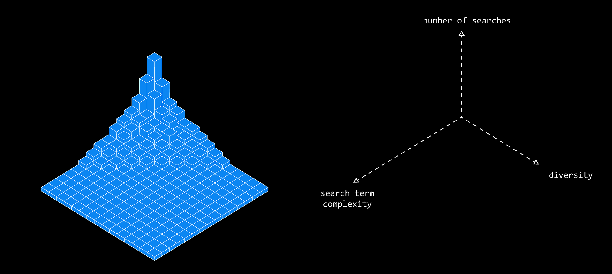
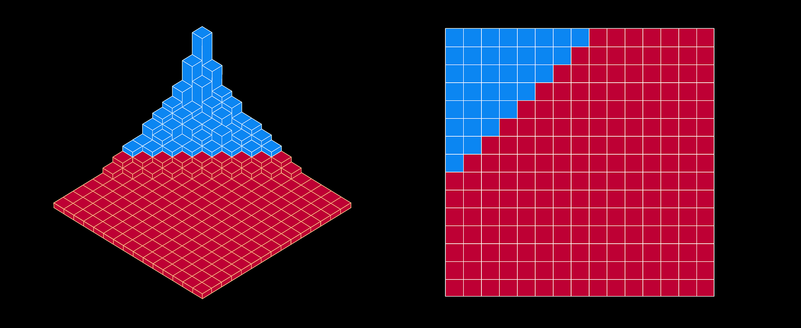
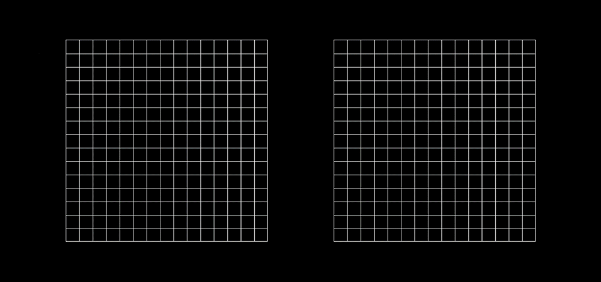
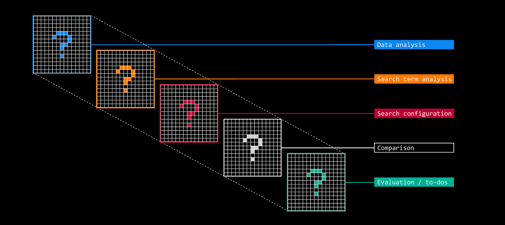
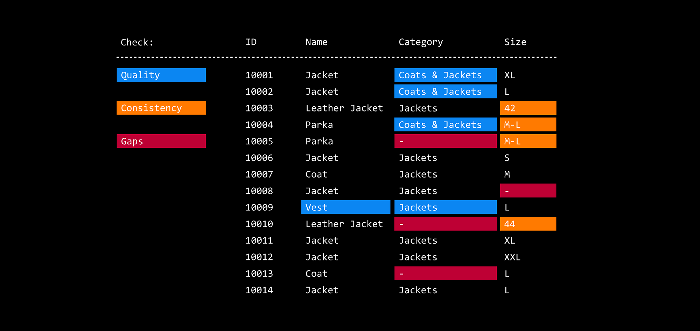
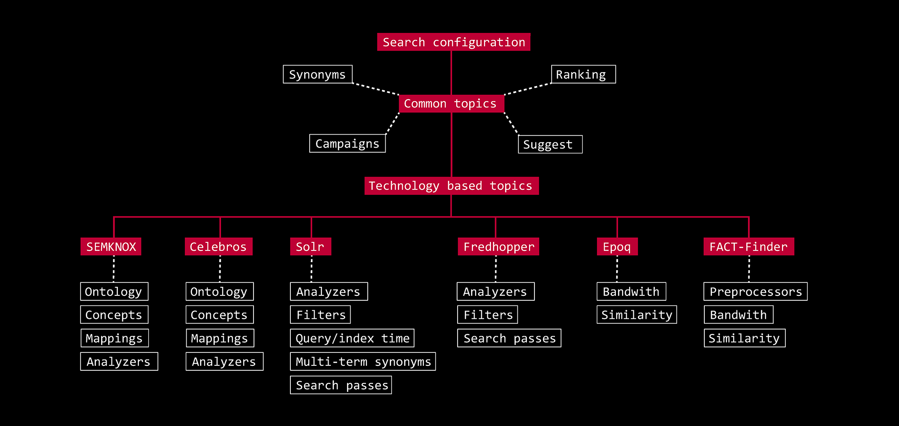
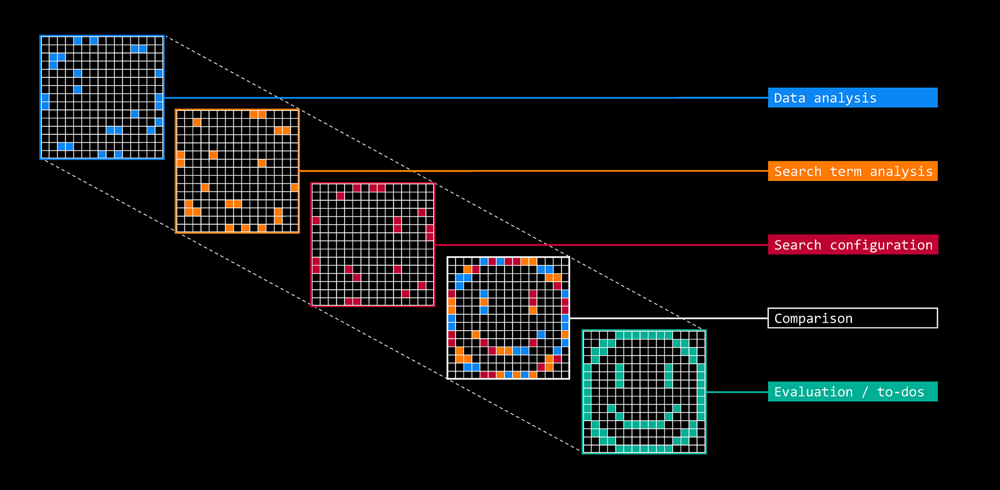
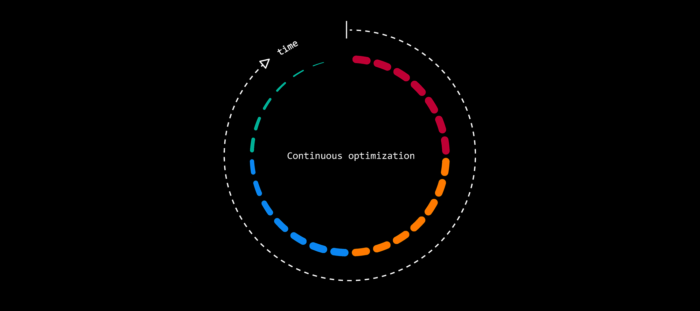
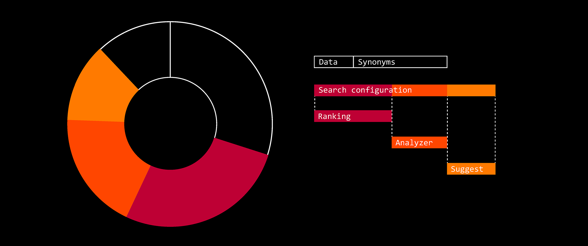
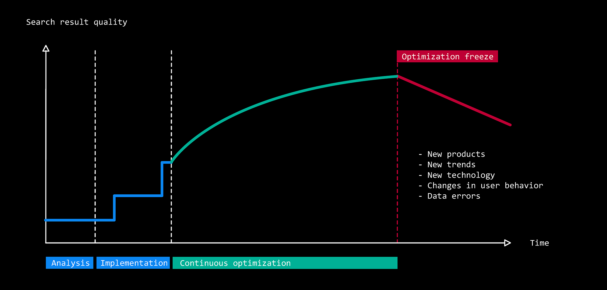
I participated in MICES 2017 in Berlin as a speaker presenting some insights into search management workflows. Here is a excerpt of my designs to visualize and explain our approach to managing search solutions.
Abstract: "The sheer amount of search requests caused by the variety of users and products can be challenging. Thousands of different search terms make it impossible to get an instant clear picture of the quality of the search results. New trends and products constantly influence search terms and need to be considered when it comes to synonyms and search configuration. Our talk gives an insight how to continuously improve the quality of search results by establishing an optimization workflow. We cover topics from the initial analysis to managing onsite search over a long period of time. The focus is on clustering and visualizing information to prioritize optimizations and to document progress."
2017 habe ich auf der MICES in Berlin einen Vortrag gehalten, der Einblicke in den Betrieb einer Suchlösung vermittelt. Hier ein Auszug der Folien, die unseren Ansatz veranschaulichen und erklären wie wir das Thema angehen.
Abstract: "Die schiere Menge an Suchanfragen, die durch die Vielfalt der Nutzer und Produkte entsteht, kann eine Herausforderung sein. Tausende unterschiedlicher Suchbegriffe machen es unmöglich, sich sofort ein klares Bild von der Qualität der Suchergebnisse zu verschaffen. Neue Trends und Produkte beeinflussen die Suchbegriffe ständig und müssen bei Synonymen und der Suchkonfiguration berücksichtigt werden. Unser Vortrag gibt einen Einblick, wie sich die Qualität der Suchergebnisse durch einen etablierten Optimierungs-Workflow kontinuierlich verbessern lässt. Wir behandeln Themen von der ersten Analyse bis hin zur langfristigen Pflege der Onsite-Suche. Der Fokus liegt darauf, Informationen zu clustern und zu visualisieren, um Optimierungen zu priorisieren und den Fortschritt zu dokumentieren."